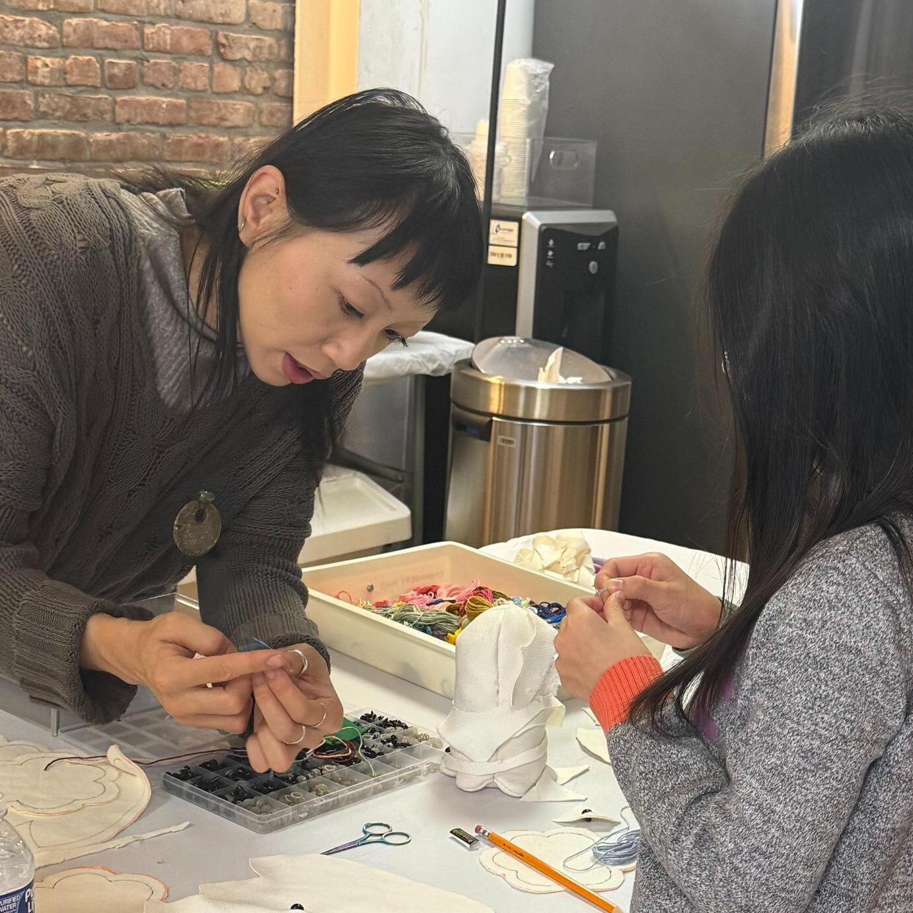
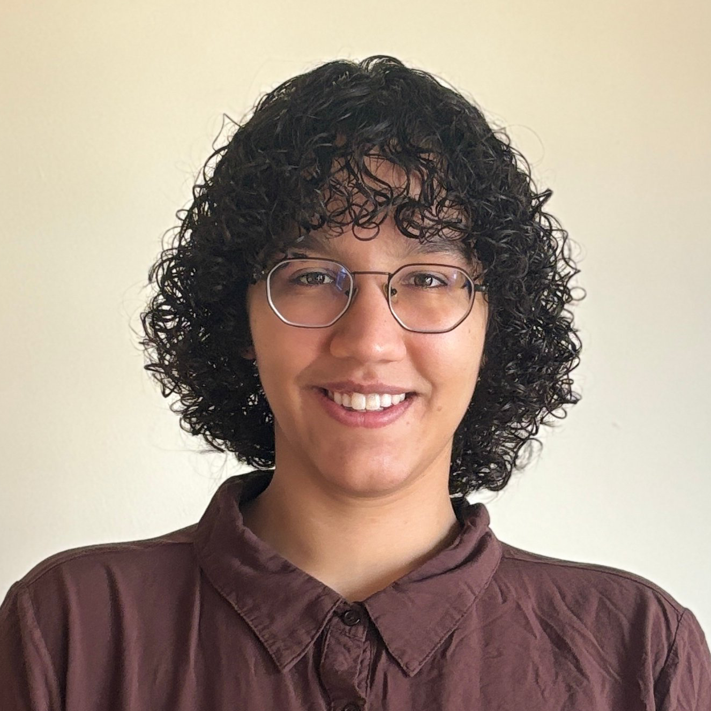

Elaine Cao – Co-Founder & Textile Arts Lead
Elaine is a textile artist, educator and non-profit worker focused on tangible skill building techniques alongside
applied learning models that incoporate critical reflections in the context of history and society. Elaine holds a degree in
Media, Culture, and Communications from New York University's Steinhardt School of Culture,
Education, and Human Development.

Sam Hafferty – Co-Founder & Creative Technology Lead
Sam is a creative technologist and educator passionate about sharing the magic of electronics to young audiences in an accessible and
thoughtful manner. Sam holds a Master of Professional Studies from New York University's Interactive Telecommunications Program at
the Tisch School of Arts and Bachelor's from the Gallatin School of Individualized Study.